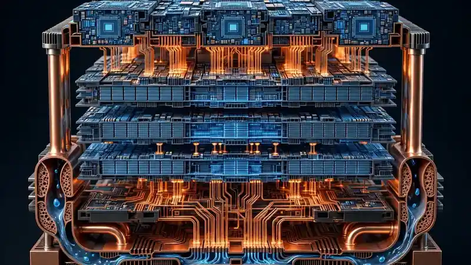

Mueon's $65M Series A: stackable 3D Cubelets to break the data center power wall
Mueon Corporation announced Thursday that it has raised $65 million in Series A funding, led by Maverick Silicon, to push its “Cubelets” — stackable three-dimensional building blocks that fuse compute and memory — from platform development toward production readiness. The round lifts the company's total funding above $80 million, and its boldest claim is efficiency: up to 10x gains in power and cost within the same rack footprint.
The round
Portland, Oregon-based Mueon announced the raise Thursday morning. Maverick Silicon led the $65 million round, with participation from Intel Capital, Geodesic Alliances Fund, Oregon Venture Fund, M-Ventures, Wellington Capital, IQT and Defined. As part of the financing, Maverick Silicon senior managing director Manish Muthal and Intel Capital managing director Srini Ananth join Mueon's board.
The Series A follows a $15.5 million seed round in 2025, when Mueon emerged from stealth, and brings total funding raised above $80 million. The company says it will use the new capital to expand its engineering and operations teams, transition Cubelets from the platform-development phase toward broader system validation and production readiness, and deepen its customer engagements.
“This financing gives us the scale to bring the next generation of compute and memory system-scale integration to market,” said Wilfred Gomes, Mueon's co-founder and CEO, describing an architecture “built to move past today's rack-level constraints.”
What a Cubelet is
Mueon's core concept is the Cubelet: a modular, three-dimensional building block that tightly integrates compute, memory, interconnect, power delivery and thermal management, with the aim of increasing deployable compute density while reducing system complexity, power draw and infrastructure overhead.
The design philosophy is to stop optimizing each subsystem independently and instead design around the constraints that increasingly define AI infrastructure economics — data movement, power density and deployment. Packaging, interconnect, power and thermals are treated as first-class design variables from the start, rather than problems to solve after the chips are picked. The architecture deliberately extends beyond any single accelerator technology.

The target: 10x efficiency
Mueon is targeting up to 10x gains in power and cost efficiency within the same rack footprint, with the architecture designed to scale toward megawatt-class density as demand grows. That figure is an engineering target, not a measured result on shipped silicon — the company is explicit that it is still working through system validation on the path to production, across four execution tracks: silicon and system architecture, advanced integration (packaging, power delivery, thermals), software and system orchestration through familiar AI frameworks, and ecosystem validation with technology, manufacturing and industry partners.
The bet is that the AI buildout's binding constraint is increasingly physical. Ampere Computing co-CEO Rohit Vidwans — Ampere is now part of SoftBank — put it plainly: large-scale data centers “have been constrained by power and cooling limits for years,” and Mueon's modular approach “rethinks the physical building blocks of infrastructure.”
Why it matters now
The raise lands as the industry's power-and-cooling problem keeps getting sharper — and as investors keep writing checks to attack it at the physical layer. Intel Capital's Srini Ananth called Mueon's approach a fundamental rethink of data-center design, “building a path to scale AI infrastructure with better economics and efficiency.” Muthal, of lead investor Maverick Silicon, pointed to the team's combination of deep expertise in the technologies that define modern data centers and the experience to deploy them at system scale.
Partner interest is already concrete. Sudeep Bhoja, co-founder and CTO of d-Matrix, said the Cubelets architecture “creates new possibilities” for partners: combined with in-memory compute, a modular system architecture can enable “smaller, denser infrastructure tailored for AI workloads.”
Whether Cubelets deliver their promised 10x will only be settled in silicon. But with the rack, not the chip, emerging as the industry's scarcest resource, a company selling a new building block for it is a bet worth watching.
Sources: PRNewswire: Mueon Raises $65M in Series A Funding to Scale its Cubelets Exponential Computing Platform (Oct 15, company announcement); Unite.AI: Mueon Raises $65M Series A to Move Cubelets Toward Production Readiness (Oct 15); RuntimeWire: Mueon raises $65M to validate modular AI data center systems (Oct 15).